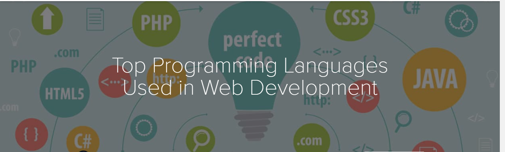
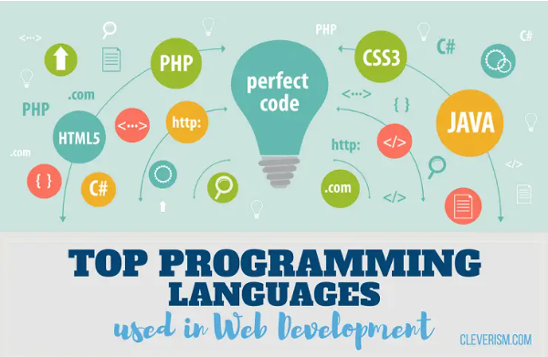
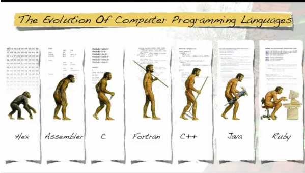

With the popularity and advancements in web technology,
it is imperative for every business to have a website
and one which is highly functional and visually attractive.
The process through which a good website,
mobile apps or other similar platforms
are created is known as web development.
One of the most integral aspects of web development
is web programming that is achieved with the help of programming languages.
Web development languages are the platforms through which instructions
are communicated to a machine and actions are pursued
|
|
|
 |
In this article, we shall learn more about
1) web development and programming languages as well as
2)focus on the most popular programming languages in the world.
raits of a programming language
The features or characteristics of a programming language can be referred to as its traits.
The following are the three main traits of such languages that you must know about:
1-Abstractions –
Most of the programming languages have certain rules that help us define or mark the data structures as well as manipulate the way in which the commands are executed. These rules are referred to as abstractions. Every language needs to be supported by sufficient abstractions and this need is defined by the abstraction principle. The abstraction principle in some cases is derived as the recommendations given to a web programmer so that he/she makes the correct use of abstractions.
2-Function and target –
When you make use of a programming language, then besides doing the writing work on your own, you also need the help of the computer system that performs the computation work or controls the algorithm. The computer also controls the external devices associated such as the printer, the robots, etc. Thus, the complete definition of a programming language includes a description or a machine or processor that has been idealized for that language. This is one reason why programming languages differ from human languages of interaction.
3-Expressive power –
Languages are mostly classified by the computations that they are able to express. This very expressive power is yet another trait of programming languages and is an important one.
Factors to be considered when choosing a programming language
Since there are so many different types of programming languages, it can be difficult for a web developer to select which one to use and which one to leave. There are certain factors on the basis of a decision can be made, and they are given as follows:
4-Targeted platform –
The first thing you need to decide is where the program will be run. Not all languages are capable of running on all kinds of platforms. For example, a program written in C language requires compilers to run on Windows and Linux based systems.
Language domain match – The language must be chosen on the basis of the problem domain that you have. One of the better ways to do so is by searching that language others in the same domain or industry are using or by trying to look for a code that resolves the issues that you may have.
5-Efficiency –
The compilers that go well with the language you choose must be efficient so as to make the language perform fast.
Elasticity and Performance – The language you choose must be flexible enough to let you add more programs or features in it. Also, its overall performance must be to your suitability and liking.
Availability of libraries – There must be a library that is capable of solving all your problems with the language that you select for web development.
6-Project size –
There are two types of programming’s: large and small. You must select a language that can support your cause and suits the project size well.
Expressiveness & Time to production – Make sure you pick that language that is highly expressive and the time taken to produce the programs or codes is not very bothersome to you.
7-Tool support –
Buy a tool-oriented language that offers you many elements and ways to edit, control and work.

Top 15 programming languages in 2015
- JavaScript
- Java
- Python
- CSS
- PHP
- Ruby
- C++
- C
- Shell
- C#
- Objective C
- R
- VimL
- Go
- Perl